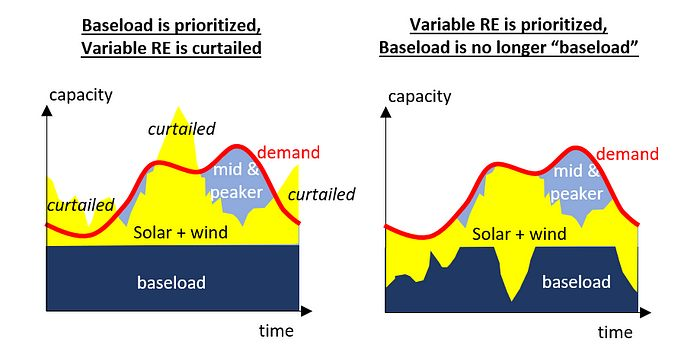
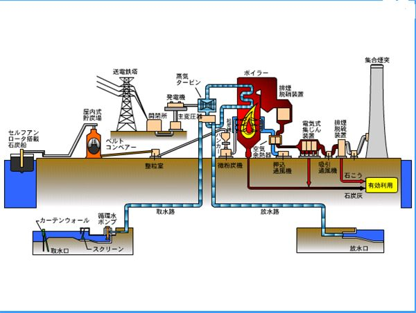
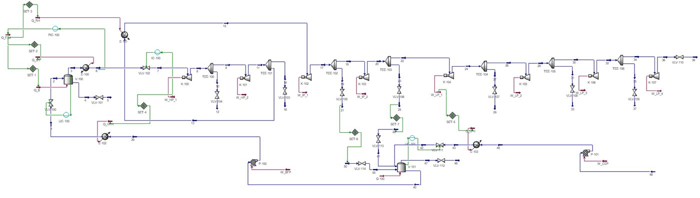
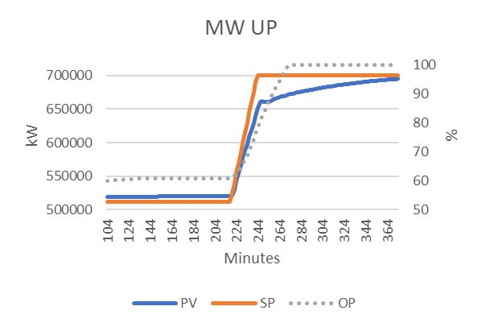
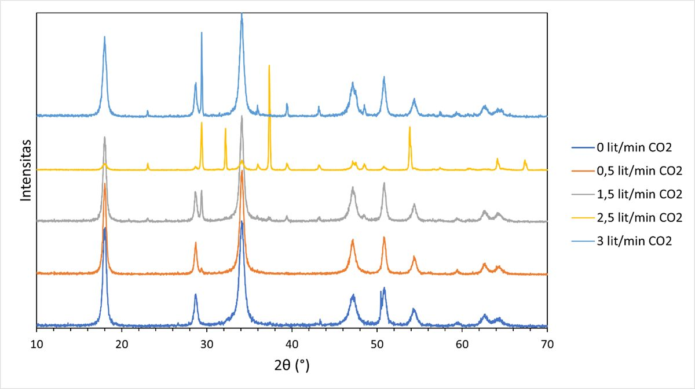

Power System DynamicsDinamika Sistem Pembangkit発電システムダイナミクス
Making thermal power plants flexible, efficient and ready for new fuels as renewables take a larger share of the grid.Membuat pembangkit termal fleksibel, efisien, dan siap untuk bahan bakar baru seiring meningkatnya porsi energi terbarukan.再エネ比率が高まる電力系統に対応し、火力発電所を柔軟・高効率で新燃料に対応可能にします。
What we studyApa yang kami teliti研究内容
Baseload plants in a renewable gridPembangkit beban dasar di jaringan terbarukan再エネ系統におけるベースロード電源
When solar and wind are prioritized, thermal units must follow net demand, ramping down at midday and up in the evening. Without flexibility, renewable output is curtailed. We quantify what each unit can deliver and design retrofits that raise ramp rate and part-load efficiency.Ketika surya dan angin diprioritaskan, unit termal harus mengikuti beban bersih, turun di siang hari dan naik di malam hari. Tanpa fleksibilitas, daya energi terbarukan terpaksa dipangkas. Kami mengukur kemampuan setiap unit dan merancang retrofit untuk meningkatkan laju ramp dan efisiensi beban parsial.太陽光・風力を優先すると、火力ユニットは正味需要に追従し、昼に出力を下げ夕方に上げる必要があります。柔軟性がなければ再エネは出力抑制されます。各ユニットの能力を定量化し、負荷変化率と部分負荷効率を高める改造を設計します。


HYSYS Dynamics model of a coal-fired unitModel HYSYS Dynamics unit batubara石炭火力ユニットのHYSYS Dynamicsモデル
A full plant model (boiler, drum, turbines, feedwater heaters and controls) reproduces load steps, drum level and main steam pressure, and is used to test control strategies and new fuels.Model pembangkit lengkap (boiler, drum, turbin, pemanas air umpan, dan kontrol) mereproduksi perubahan beban, level drum, dan tekanan uap utama, serta digunakan untuk menguji strategi kontrol dan bahan bakar baru.ボイラ、ドラム、タービン、給水加熱器、制御を含むプラント全体モデルで負荷変化、ドラム水位、主蒸気圧力を再現し、制御戦略や新燃料の評価に用います。



Researchers in this themePeneliti di tema iniこのテーマの研究者
Selected publicationsPublikasi terpilih主な論文
Research radar: new papers worldwideRadar riset: publikasi terbaru duniaリサーチレーダー：世界の最新論文
Related research projectsProyek riset terkait関連研究課題
Recent student thesesTesis mahasiswa terbaru最近の学位論文
Interested in this theme?Tertarik dengan tema ini?このテーマに興味がありますか？
See example topics for students, or talk to us about a joint project.Lihat contoh topik untuk mahasiswa, atau diskusikan proyek bersama.学生向けテーマ例を見る、または共同研究をご相談ください。